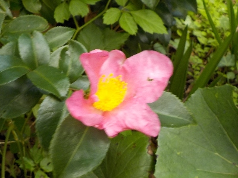
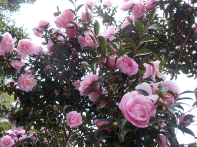
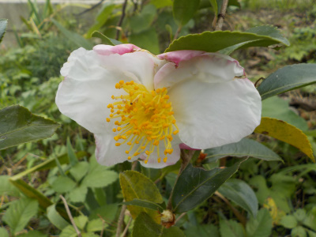
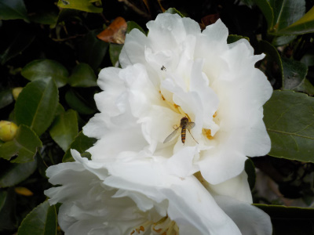
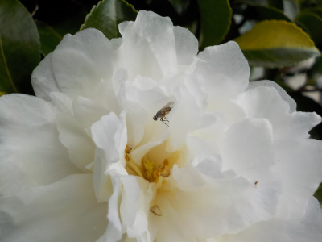
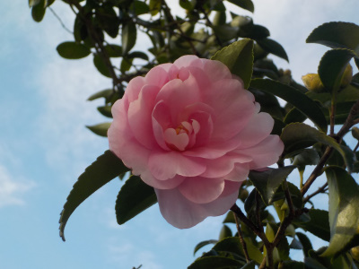

サザンカの小さい花が咲いていました。
更新日 : 2024/11/04

今家で咲いてるのはこれだけ。今年は開花が遅いです。
もうちょっとしたら沢山咲くかな。
更新日 : 2024/11/04

今家で咲いてるのはこれだけ。今年は開花が遅いです。
もうちょっとしたら沢山咲くかな。
更新日 : 2024/03/17

ツツジの茂みに丸っこい葉っぱの木が生えてました。
たぶんサザンカ。
引っこ抜いて植木鉢に植えました。
更新日 : 2022/11/23

こんなのを見ると家にサザンカがあって良かったって思います。
来年も見れるように管理しないといけないです。
更新日 : 2021/12/05

花が開ききった状態で、どこも傷んだ感じのない花がありました。
こんな状態の花が沢山咲いてるといいんですけど、なかなかそんな事にはならないですね。
更新日 : 2021/10/23

サザンカが咲きだしました。なんとなく冬な気分です。
コタツやストーブを出そうと思いました。
更新日 : 2020/11/23

いい匂いがするのか、小さい虫がサザンカに集まっていました。

花が白いので虫がいるのが目立つのかな。
更新日 : 2020/11/01

サザンカが咲いていました。
これからしばらくの間花が楽しめますね。
サザンカが咲くと、冬の準備をしなきゃって思います。